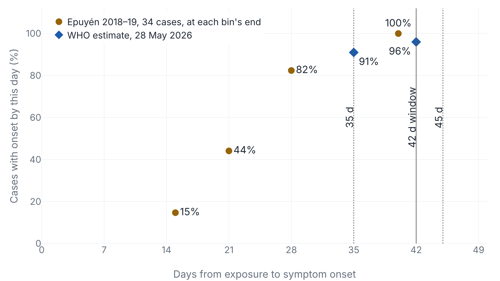
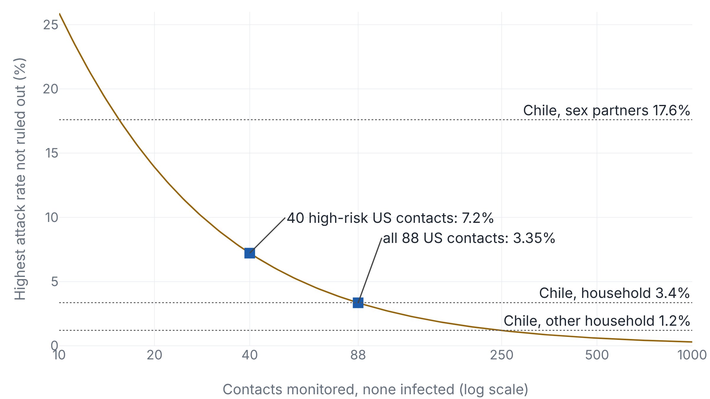

Health agencies set 42 days of Andes virus monitoring before WHO estimated what it would catch
By this paper's arithmetic, CDC's 88 uninfected US contacts put a 95% upper bound of 3.35% on the per-contact attack rate, level with the rate a Chilean study measured in households.
Six weeks of watching 88 people
On 5 November CDC published its account of the US response to an outbreak of Andes virus, "the only hantavirus known to be transmitted person-to-person", on the cruise ship MV Hondius. It monitored 88 US residents for 42 days after their last exposure, and none was infected.1 WHO counted 13 cases and 3 deaths, all among people who had been aboard.2
WHO, CDC and ECDC fixed the 42 days in early May. WHO estimated what share of infections the window catches only on 28 May. And zero infections in 88 contacts bound the risk only down to the rate at which household members caught the virus in Chile.
Everyone who had been aboard counted as high risk
A contact is someone exposed to a case closely enough to be infected. Monitoring means a health department checks that person for symptoms until a set number of days has passed since the last exposure. CDC's 88 contacts came from the ship and from two flights a symptomatic passenger took on 25 April.1
Everyone who had been aboard since the index patient fell ill was high risk, because of "prolonged close contact among passengers and crew" and shared living spaces. On the flights, only the 12 seated in the patient's row or within two rows of it were. Day 0 was each person's last exposure, so the flight contacts finished on 6 June and the 18 repatriated through the National Quarantine Unit in Omaha on 21 June.1
Day 42 sits two days past Epuyén's longest incubation
The incubation period is the time from infection to first symptoms, and a monitoring window has to outlast nearly all of it. WHO advised 45 days on 4 May3 and 42 by 8 May.4 On 8 May CDC told clinicians that symptoms appear "within 4-42 days",5 and ECDC adopted 42 on 9 May as covering "the full range of possible onset".6 On 28 May WHO published a mean incubation of 22 days and a "probability of safe release" of 96% at 42 days and 91% at 35, which it said "reaffirms" the rule.7 WHO does not define that phrase, which is read here as the share of infected contacts with symptoms by that day.
CDC calls 42 days "the upper end of the known ANDV incubation period" and cites 4–42 days to two papers.1 One, on a 2011 Chilean cluster, gives "range 7–42" and attributes it to a 2006 study8 that reports 7–39.9 The 2018–19 person-to-person outbreak in Epuyén, Argentina, ran 9–40 days, according to the laboratory that investigated it.10 Six weeks is the round number just above both.

In Epuyén, 82% had symptoms by day 28 and all 34 by day 40.11 WHO's points leave 4% of infections after day 42. A gamma distribution with Epuyén's mean and standard deviation, 21.6 and 7.0 days,11 leaves 0.8% by this paper's arithmetic. WHO pooled the Argentine outbreaks with the 13 cruise cases and published neither its method nor the cruise incubations, so the gap cannot be traced.7
What zero infections in 88 contacts can rule out
The secondary attack rate is the share of a case's contacts who become infected. If each of the 88 had the same independent chance p, the probability that none is infected is (1 − p)88. Setting that to 0.05 gives p = 3.35%, the one-sided 95% upper bound. The rule of three, 3/88, gives 3.4%. This bound and Fig. 3 are this paper's arithmetic, not CDC's.

In that study, 16 of 476 household contacts fell ill, 3.4%. The rate was 17.6% among sex partners and 1.2% among other household members.12 At 1.2%, the chance that all 88 escape is 0.98888, about one in three. Ruling that rate out would take about 250 uninfected contacts. Nor are the 88 one population: 60 shared a plane with a patient, 28 a ship with the outbreak. CDC warns that the absence of secondary infections "should not be interpreted as evidence that no transmission risk existed".1
In Epuyén, a single rodent-to-human infection led to 34 confirmed infections and 11 deaths, and the reproduction number fell from 2.12 to 0.96 once cases were isolated and contacts quarantined.13 The case fatality rate, the share of cases who die, is 20–35% by ECDC's figures,14 about 40% by CDC's1 and 40–50% by WHO's.7 This outbreak's was 3 of 13.2 Elsewhere, monitoring caught cases among people who had left the ship, in Canada, the Netherlands and Spain.7 By WHO's estimate, stopping at 35 days would have released 9% of infected contacts before symptoms, against 4% at 42.7
By this paper's 95% bound, the 88 US contacts exclude any attack rate above 3.35%, which rules out the Chilean partner rate and meets the household one. The only published estimate of what six weeks buys over five is WHO's 91% and 96%, issued 20 days after the rule and with a longer tail than Epuyén's cases show.
Sources
- CDC · MMWR 75(43), 5 November 2026
- WHO · DON611, 2 July 2026
- WHO · DON599, 4 May 2026
- WHO · DON600, 8 May 2026
- CDC · HAN 00528
- ECDC · Rapid scientific advice, 9 May 2026
- WHO · DON604, 28 May 2026
- Emerg Infect Dis · Martinez-Valdebenito et al., southern Chile (2014)
- Emerg Infect Dis · Vial et al., hantavirus incubation period (2006)
- EBioMedicine · Iglesias et al. (2022)
- UKHSA · Hantavirus incubation evidence summary, June 2026
- J Infect Dis · Ferrés et al., Chilean household contacts (2007)
- NEJM · Martínez et al., Epuyén super-spreaders (2020)
- ECDC · Threat assessment brief, 6 May 2026